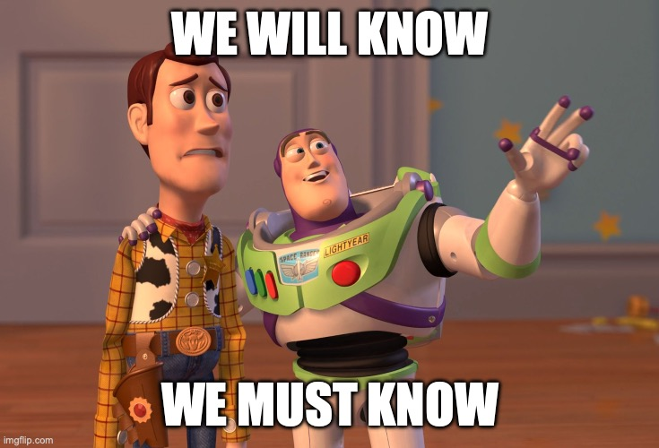

We, as system researchers, face an existential crisis. We find ourselves questioning our unique strengths and fundamental purpose where industry increasingly outpaces academic innovation.
Research is a privilege
Research is funded by taxpayers, yet we often take this privilege for granted. We justify our entitlement to these resources by pointing to our intelligence or academic credentials, rarely questioning whether we truly deserve this support.
I agree with the general idea of spending more money on research is beneficial to the society, but I also believe this does not mean we should take the money for granted, unaccountable to the public.
This is especially true when someone pull the plug on the research funding. We could easily blame the person, and name a few research achievements that would be impossible without those funding. But from the bottom of my heart, I often have the same question that whether some of the research funding would be better spent on something else.
I’m not suggesting we should limit funding to research with guaranteed outcomes - that would defeat the very purpose of exploration and discovery. I’m concerned about the lack of public accountability in our research funding allocation process. The decision-makers who distribute these funds typically belong to the same academic circles, often disconnected from and unaware of the real needs and concerns of the broader society they’re meant to serve. We easily create echo chambers where we judge work by academic metrics, not real-world value. Without public oversight, we face no consequences for ignoring practical impact. When nobody holds us accountable, our research gradually becomes less relevant and less valuable over time.
But the public has one last ultimate weapon — cutting off the money entirely. This tough move hurts, but sometimes it’s the only way to make researchers listen: we need to do work that actually matters to people.
Research is a privilege, not an entitlement. We must question whether our work truly justifies the public investment we receive and delivers meaningful value to society.
System research is irrelevant
System research is irrelevant. Industry has become the better place for meaningful systems work. Most impactful and innovative systems today come from companies, not universities.
Industry as the money and patience to build complete systems. But most importantly, industry systems are accountable – systems that don’t deliver value get shut down quickly. This accountability creates a natural selection process. Industry systems must stay relevant or die. They evolve to meet real needs or disappear.
Due to the unaccountable funding agencies mentioned above, research systems are often one-shot projects —- they are immediately abandoned right after publication. We are frequently impressed by the great systems coming from industry (the most recent example being the infrastructure at DeepSeek), and we’ve realized that we are far from competing with them. As a result, we seem to constrain ourselves to a few narrow research topics, solving problems that are difficult to connect with even a single real user (essentially imaginary problems). Or we simply adjust our goal from research to education, preparing students for their industry jobs, so they can continue research there. But if that is the case, why would we need research funding at all?
We are unqualified
PhD students are typically only a few years older than undergraduates. How can they possibly compete with senior industry practitioners who have been working on the same problems for decades?
Yet we are not even trying to compete. We don’t like “engineering problems”, because we researchers are supposed to work on “research problems”.
We like research problems for two simple reasons:
Feeling “researchy” makes us feel good about ourselves; simply thinking about fancy terminology makes us feel fundamental and important.
We don’t know how to code.
We waste too much time babbling about knowledge we learn from papers – how to schedule a million machines, how to train a billion parameters, how to design infinitely scalable systems. Just thinking about these problems makes us feel important as researchers, although most of us have never deployed a service in the cloud, never used the techniques we proposed, and never worked with the filesystems, kernels, compilers, networks, or databases we studied. We waste time on these theoretical discussions because we don’t know how to code and are unwilling to practice. As Feynman said, “What I cannot create, I do not understand.” Simply knowing how a system works from 1000 feet doesn’t mean we can build it. The nuances of real systems often explain why they’re built in particular ways. Without diving into these details, we’re merely scratching the surface.
Here are my bold claims:
Your opinion doesn’t matter until you write >50k lines of system code.
Your novel idea is 💩 if it’s not implemented in a system with real users.
(Writing code does not make you a good researcher, but not writing code makes you a bad one.)
The system research community does not need more novel solutions – novel solutions are essentially combinations of existing techniques. When we need to solve a problem, most of us would figure out a similar solution.
Instead, we need more people willing to sit down and code, build real systems, and talk to real users. Be a solid practitioner, don’t be a feel-good researcher.
We are pushing young researchers away
WE ARE TOO SLOW because we waste too much time on procedural overhead rather than actual scientific exploration.
Paper publishing takes too much time. We spend too much effort arguing what’s new and what’s hard, instead of focusing on doing the actual research. Writing a paper already takes too much time, and then we need to anonymize artifacts, register abstracts, wait for reviews, write rebuttals, revise the paper, and can still be rejected for arbitrary reasons. The turnaround time for a single submission can be up to 6 months.
There is also a dark side to paper publishing. The entire publication process can be exploited by determined actors, and we are unwilling to address this issue, probably because many big names are involved. Young researchers see low-quality papers being accepted, yet their own carefully crafted systems are rejected for arbitrary reasons.
All of these burn our time and energy, pushing young researchers away from the community. After all, research doesn’t have to happen in academia.
Our measurement is wrong
All of our research projects start with the two questions of what’s new and what’s hard, but unfortunately, these two questions have guided us toward irrelevancy. Many one-shot papers claim novelty and then disappear, preventing future research projects from making progress. They take credit for being the first to introduce an idea, even when the implementation doesn’t work or is completely wrong. Yet, all future researchers are required to compare their work against these papers.
Most of the time, the code is terribly implemented or overly simplified, making fair comparisons impossible. But reviewers don’t care – they see the two papers as informationally equivalent, viewing the same idea from a 1000-foot perspective, and lazily question authors about what’s new and what’s hard.
The real difference between papers often lies in numerous small details that sound trivial but are actually essential for relevance. In most cases, figuring out these details takes much more time and demonstrates more novelty than coming up with the initial idea itself.
The reviewers – often just a few years older than PhD students, don’t know how to code, unable to delve into implementation details, and incapable of appreciating real system nuances – will likely reject the paper for lack of novelty.
System research is knowing
1
Despite all previous arguments, I still believe there is value in systems research, and I still believe we can be relevant, but that’s for another post.
System research is about knowing – understanding systems deeply and completely, contrasting with AI research that embraces uncertainty and probabilistic approaches.
We study the complex interactions of systems, and practice to know them better. We fight against the seemingly infinite complexity of systems, and uncover the underlying principles.
Knowing requires a lot of practicing – hard work, patience, and a lot of coding.
Footnotes
https://en.wikipedia.org/wiki/Ignoramus_et_ignorabimus↩︎